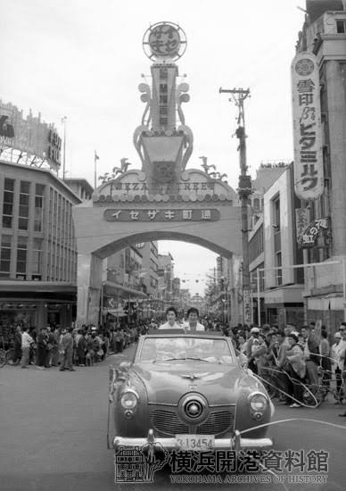
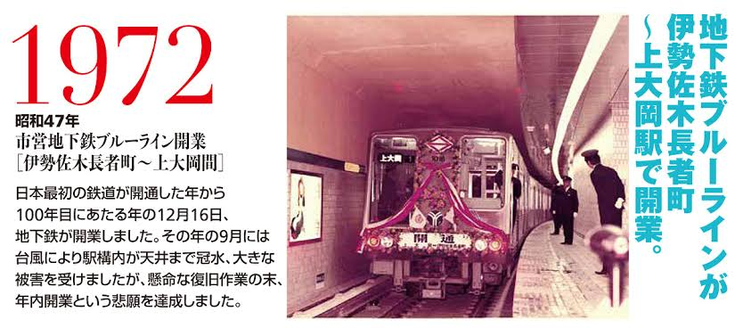
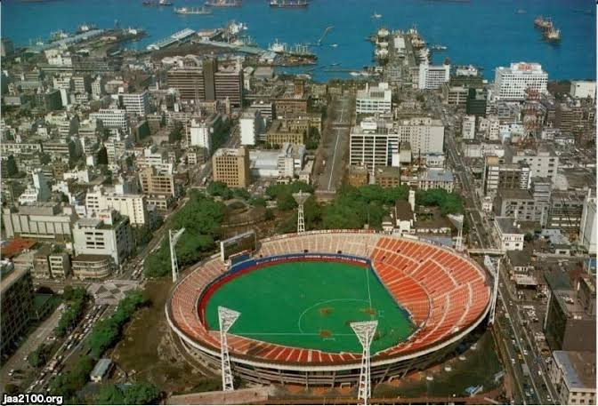
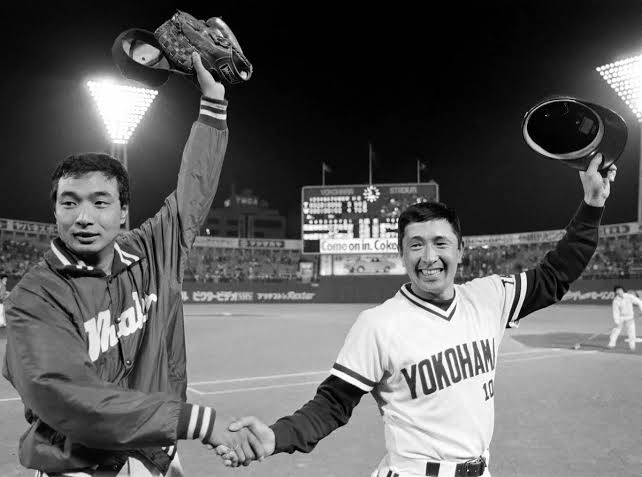
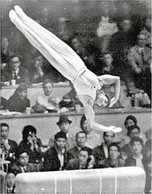
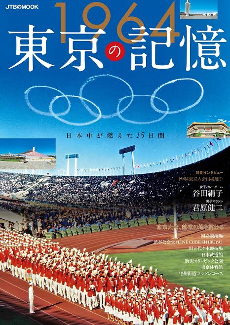
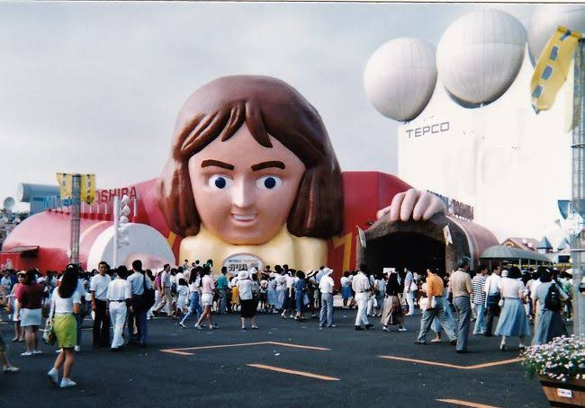
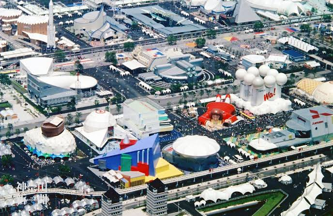

質問1~5
Q1 1958年の横浜開港１００年記念祭が行われた当時、あなた方は進学仕立ての小学校１年生か２年生であった
はずですが、その催しに対してあなた方やクラスメイト達はどのような想いがありましたか？

Q2 1976年に市営地下鉄が開通しましたが、就職してから１、２年のあなた方にとって
その変化はどのようなものでしたか？

Q3 1978年に建設された横浜スタジアムですが、あなた方が２７，２８歳の時になりますが、
結婚してパートナーがいたり、すでに子育てをしていた方もいらっしゃると思います。
そんな中でパートナーや子供と見に行って印象に残っている試合などはありますか？


Q4 あなた方が１３、１４歳の時東京オリンピックが開催されましたが、
あなた方や、学校のクラスではどの種目が特に注目されていましたか？


Q5 1989年に横浜博覧会が開催されましたが、未来を感じさせるその博覧会で
ご家族で興味を持った展示はなんでしたか？

